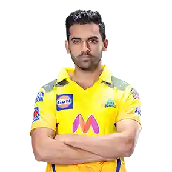
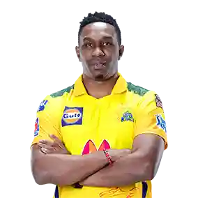
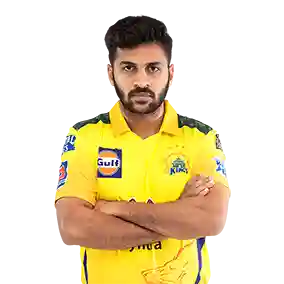

MS Dhoni
Role: Wicketkeeper-Batsman
Captain

Ravindra Jadeja
Role: All-Rounder
Known for his incredible fielding skills and contributions with both bat and ball.

Deepak Chahar
Role: Bowler
Specializes in swing bowling and is known for early breakthroughs in the innings.

Ruturaj Gaikwad
Role: Batsman
A consistent opening batsman known for his elegant stroke play.

Moeen Ali
Role: All-Rounder
An aggressive batsman and effective off-spinner, bringing flexibility to CSK.

Dwayne Bravo
Role: All-Rounder
Renowned for his death-over bowling and finishing ability, one of the most experienced T20 players.

Ambati Rayudu
Role: Batsman
A dependable middle-order batsman, instrumental in stabilizing innings and chasing targets.

Shardul Thakur
Role: Bowler
Known as "Lord Thakur," a versatile bowler who contributes with both ball and bat in crucial situations.